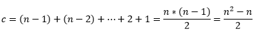

La forma como se desarrolla el algoritmo, es seleccionando el dato más pequeño y se cambia con el primer dato. La siguiente iteración selecciona el segundo dato más pequeño (de los restantes datos) y este es intercambiado con el dato de la segunda posición; y así sucesivamente hasta que llegue al final, cuando el segundo dato más grande se selecciona y es intercambiado con el índice del segundo al último. Esto deja el dato más grande en el último índice. Luego de la n interacción, los n datos más pequeños del arreglo, terminaran ordenándose de forma ascendente, en los primeros n datos del arreglo.
Ejemplo
24 36 2 22 67 61 83 29 6 53
En este caso, un software que efectué el ordenamiento por selección, primero buscara el dato más pequeño (2) de este ejemplo, que se encuentra en la posición o índice 2. Lo que hace el programa es que intercambia el número 2 con el 24, lo que resulta:
2 36 24 22 67 61 83 29 6 53
Ya en la tercera iteración, el programa sigue buscando al siguiente dato más pequeño (22), y lo intercambia con el 24.
2 6 22 24 67 61 83 29 36 53
El algoritmo sigue hasta que los datos en el arreglo estén todos ordenados.
2 6 22 24 29 36 53 61 67 83
ANALISIS DE EFICIENCIA
Mediante comparaciones, el algoritmo realiza la siguiente forma matemática

En los intercambios o los movimientos
M = n - 1